화학분석기사(구) (2016-10-01 기출문제)
1과목: 일반화학
1. 다음의 루이스 구조식 중 옳지 않는 것은?
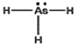
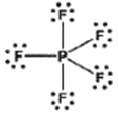
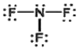
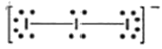
(정답률: 74%)

2. S, Cl, F를 원자 반지름이 작은 것부터 큰 것 순서대로 배열한 것은?
- Cl, S, F
- Cl, F, S
- F, S, Cl
- F, Cl, S
(정답률: 82%)
3. 다음 중 산의 세기가 가장 강한 것은?
- HCIO
- HF
- CH3COOH
- HCl
(정답률: 79%)
4. 적정 실험에서 0.5468g의 KHP(프탈산 수소칼륨, KHC8H4O4. 몰질량:204.2g)를 완전히 중화하기 위해서 23.48mL의 NaOH 용액이 소모되었다. NaOH 용액의 농도는 얼마인가?
- 0.3042M
- 0.2141M
- 0.1141M
- 0.0722M
(정답률: 72%)
5. 인산(H3PO4)은 P4O10(s)과 H2O(L)을 섞어서 만든다. P4O10(s) 142g과 H2O(L) 180g이 었을 때 생성되는 인산은 몇 g인가? (단, P4O10, H2O, H3PO4의 분자량은 각각 284, 18, 98이다. 다음 화학반응식의 반응계수는 맞추어지지 않은 상태이다.)
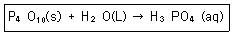
- 98
- 196
- 980
- 1960
(정답률: 80%)
6. 암모니아 용액의 수산화 이온의 농도가 5.0×10-6일 때 하이드로늄 이온의 농도를 계산하면 얼마인가?
- 5.0×10-6 M
- 2.0×10-6 M
- 5.0×10-9 M
- 2.0×10-9 M
(정답률: 72%)
7. 다음과 같은 이온반응이 염기성 용액에서 일어날 때, 그 이온반응식이 올바르게 완결된 것은?
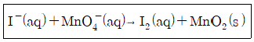
- 6I-(aq)+4H2O(L)+2MnO4-(aq)→3I2(aq)+2MnO2(s)+8OH-(aq)
- 6I-(aq)+2MnO4-(aq)→3I2(aq)+2MnO2(s)+2O2(g)
- 4I(aq)+2H2O(L)+2MnO2(s)+8H+(aq)
- 2I-(aq)+2H2O(L)+2MnO4-(aq)→3I2(aq)+2MnO2(s)+2OH-(aq)+H2(g)
(정답률: 75%)
8. 다음 각 산 또는 염기에 대하여 필요한 짝산 또는 짝염기가 틀리게 작성된 것은?
- H2O가 염기로 작용할 때 짝산은 H3O+이다.
- HSO3-가 산으로 작용할 때 짝염기는 SO32-이다.
- HCO3-가 산으로 작용할 때 짝염기는 H2CO3이다.
- NH3가 염기로 작용할 때 짝산은 NH4+이다.
(정답률: 77%)
9. 다음 화합물의 명명법으로 옳은 것은?
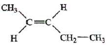
- 1-펜텐
- 트랜스-2-펜텐
- 시스-2-펜텐
- 시스-1-펜텐
(정답률: 78%)
10. 질량백분율 10.0% NaCl 수용액의 몰랄농도는 얼마인가? (단, NaCl의 몰질량은 58.44g/mol 이다.)
- 0.171m
- 1.71m
- 0.19m
- 1.9m
(정답률: 46%)
11. 물질의 상태에 대한 설명으로 틀린 것은?
- 고체에서 기체로 상변화가 일어나는 과정을 승화(sublimation)라 하며, 기체에서 고체로 상변화하는 과정을 증착(deposition)이라 한다.
- 고체, 액체, 기체가 공존하여 평형을 이루는 온도, 압력 조건을 임계점(critcal point)이라 하며 이러한 상태의 물질은 초임계 유체(supercritical fluid)라 부른다.
- 온도가 증가하면 액체의 증기압이 지수함수적으로 증가한, 온도 변화에 따른 증기압 변화를 등발열과 관련지어 예측하는 방정식을 크라우지우스-클라페이론식(Clausius-Clapeyron equation)이라 한다.
- 물은 낮은 몰질량(18.02g/mol)에도 불구하고 높은 끓는점을 가지며, 다른 물질과는 달리 액체상에 비해 고체상의 밀도가 더 낮다. 이러한 특이성은 물분자의 큰 극성 및 소수결합에 근원이 있다.
(정답률: 63%)
12. 탄소가 완전 연소하여 CO2가 되는 반응이 있다. 탄소의 1몰을 100% 과잉공기와 반응시켰을 때 생성된 CO2의 부피 백분율(vol%)은 얼마인가? (단, 공기 중 산소의 함량은 21vol% 이다.)
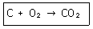
- 100 vol%
- 24.2 vol%
- 10.5 vol%
- 3.8 vol%
(정답률: 53%)
13. 카보닐 기 양쪽에 두 개의 탄소 원자가 결합하고 있는 화합물을 무엇인가?
- 알코올
- 페놀
- 에테르
- 케톤
(정답률: 71%)
14. 알칸(alkane)류 탄화수소에 대한 다음 설명 중 틀린 것은?
- 알칸류의 탄소 원자는 다른 원자와 sp3 궤도함수를 통해 결합된다.
- 사슬형 알칸류 탄화수소의 탄소 결합각은 모두 109.5 도이다.
- 사슬형 알칸류 탄화수소의 탄소-탄소 단일 결합각은 자유 회전이 불가능하다.
- 사슬형 알칸류 탄화수소의가 가질 수 있는 회전이성질체를 형태(conformation)이성질체라고 부른다.
(정답률: 81%)
15. 분자의 전하량보존의 법칙을 엄격히 지키면서 분자 내의 원자에 간편한 가상적인 전하량을 부여할 수 있는데 이를 산화수라 부른다. 이에 대한 설명 중 옳지 않는 것은?
- 중성분자에서 원자들의 산화수의 합은 0이어야 하며, 이온인 경우 산화수 합은 이온의 전하량과 같다.
- 화합물에서 알카리금속 원자의 산화수는 +1, 알칼리토금속은 +2이다.
- 수소는 화합물에서 예외없이 항상 +1이다.
- 플루오린은 항상 -1이나, 산소나 다른 할로젠 원소와 결합하는 할로젠 원소는 예외로 양의 산화수를 가질 수 있다.
(정답률: 79%)
16. 수소와 질소로부터 암모니아를 합성하는 반응에서 질소기체 7.0g을 충분한 양의 수소와 반응시켰을 때 생성되는 암모니아 기체의 부피는 표준상태에서 몇 L인가?
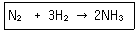
- 22.4
- 11.2
- 5.6
- 4.48
(정답률: 67%)
17. N2 분자가 가지고 있는 3중 결합은 어떠한 결합인가?
- 두 개의 bonding과 한 개의 anti-bonding 시그마 결합
- 1개의 파이 결합과 2개의 시그마 결합
- 두 개의 bonding과 한 개의 anti-bonding파이 결합
- 1개의 시그마 결합과 2개의 파이 결합
(정답률: 72%)
18. 다음은 몇 가지 수소 화합물의 이름을 나타낸 것이다. 다음과 같은 방법으로 HF의 이름을 나타낸 것으로 옳은 것은?
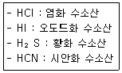
- 탄소질화 수소산
- 탄질화 수소산
- 질소탄화 수소산
- 플루오린화 수소산
(정답률: 89%)
19. MnO4-에서 Mn의 산화수는 얼마인가?
- +2
- +3
- +5
- +7
(정답률: 89%)
20. 35℃에서 염화칼륨의 용해도는 40g이다. 만약 35℃에서 20g의 물 속에 KCl이 5g 녹아있다면 이 용액은 어떤 상태인가?
- 불포화
- 포화
- 과포화
- 초임계
(정답률: 80%)
2과목: 분석화학
21. 완충용액에 대한 설명으로 틀린 것은?
- 완충용액의 pH는 이온세기와 온도에 의존하지 않는다.
- 완충용량이 클수록 pH변화에 대한 용액의 저항은 커진다.
- 완충용액은 약염기와 그 짝산으로 만들 수 있다.
- 완충용량은 산과 그 짝염기의 비가 같을 때 가장 크다.
(정답률: 78%)
22. 0.⑤0mol 트리스와 0.⑤0mol 트리스 염화수소를 녹여 만든 500mL 용액의 pH는 얼마인가? (단, pKa(BH+)=8.075이다.)
- 1.075
- 5.0
- 7.0
- 8.075
(정답률: 72%)
23. 산화-환원적정에서 산화제 자신이 지시약으로 작용하는 산화제는?
- 아이오딘(l2)
- 세륨 이온(Ce4+)
- 과망간산 이온(MnO4-)
- 중크롬산(Cr2O72-)
(정답률: 83%)
24. 다음 산 중에서 가장 약한 산은?
- 염산(HCl)
- 질산(HNO3)
- 황산(H2SO4)
- 인산(H3PO4)
(정답률: 80%)
25. 적정법(titration)을 이용하기 위한 반응조건으로 가장 거리가 먼 것은?
- 반응이 빨라야 한다.
- 평형상수 K가 작아야 한다.
- 반응이 정량적이어야 한다.
- 적당한 종말점 검출법이 있어야 한다.
(정답률: 80%)
26. 침전적정에 대한 설명으로 옳은 것은?
- 분석물질의 용해도곱이 작을수록 당량점이 뚜렷이 나타난다.
- 분석물질의 농도가 높고 용해도곱이 클수록 당량점이 뚜렷이 나타난다.
- 분석물질의 농도가 낮을수록 당량점이 뚜렷이 나타난다.
- 분석물질의 농도와 무관하게 용해도곱이 크면 당량점이 뚜렷이 나타난다.
(정답률: 36%)
27. 일정량의 금속 아연을 포함하고 있는 시료용액 25.0mL를 pH 10에서 EBT 지시약과 0.02M EDTA 표준용액을 사용하여 킬레이트 적정법으로 아연을 정량하였다. 이 때 EDTA 표준용액 33.3mL를 적강하였을 때 당량점에 도달하였다면 시료용액에 포함된 금속 아연의 양은 얼마인가? (단, Zn의 원자량은 63.58이다.)
- 0.1269g
- 0.0846g
- 0.0662g
- 0.0423g
(정답률: 50%)
28. 염화나트륨 과포화 용액에 용질로 사용한 염화나트륨을 약간 더 넣어주거나 염화나트륨 과포화용액을 잘 저어주면 그 용액은 어떻게 되는가?
- 용매가 증발하여 감소한다.
- 염화나트륨 포화 용액이 된다.
- 염화나트륨 불포화 용액이 된다.
- 염화나트륨 과포화 용액 그대로 있다.
(정답률: 70%)
29. Maleic acid(pK1=1.9, pK2=6.3) 0.10M 수용액 10.0mL에 같은 농도의 NaOH수용액 15.0mL를 가했을 때의 pH값으로 가장 가까운 것은?
- 1.9
- 4.1
- 6.3
- 9.7
(정답률: 43%)
30. 무게(중량)분석을 하기 위하여 침전을 생성시킬 때 가장 고려해야 할 사항으로 가장 거리가 먼 것은?
- 침전의 손실이 없게 해야 한다.
- 침전의 용해도를 크게 해야 한다.
- 여과하기 쉬운 침전을 생성시켜야 한다.
- 조성이 일정하고, 순수한 침전을 생성시켜야 한다.
(정답률: 84%)
31. EDTA에 대한 설명으로 틀린 것은?
- EDTA는 이양성자 계이다.
- EDTA는 널리 사용하는 킬레이트제이다.
- EDTA 1몰은 금속이온 1몰과 반응한다.
- 주기율표 상의 대부분의 원소를 EDTA를 이용하여 분석할 수 있다.
(정답률: 68%)
32. 다음 산-염기의 적정 반응 지시약을 사용하는 종말점을 구하기가 가장 힘든 경우는?
- 0.01M HCl(aq)+0.1M NH3(aq)
- 0.01M HCl(aq)+0.1MNaOH(aq)
- 0.01MCH3COOH(aq)+0.1MNaHO(aq)
- 0.01MCH3COOH(aq)+0.001MNH3(aq)
(정답률: 67%)
33. 어떤 용액에 다음과 같은 5종의 이온들이 존재한다면 이 용액의 charge balance를 옳게 나타낸 것은?
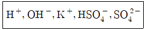
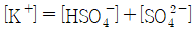
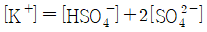
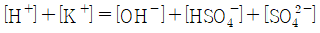
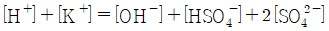
(정답률: 72%)
34. EDTA 적정에서 종말점 검출 방법으로 사용할 수 없는 것은?
- 금속 이온 지시약
- 유리 전극
- 빛의 산란
- 이온 선택성 전극
(정답률: 72%)
35. 다음의 2가지 반응에서 산화제(oxidizing agent)는 각각 무엇인가?
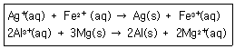
- Fe2+(aq), Al3+(aq)
- Ag+(aq), Al3+(aq)
- Fe2+(aq), Mg(s)
- Ag+(aq), Mg(s)
(정답률: 75%)
36. 먹는 물 기준 벤젠 함유량은 10ppb 이라고 할 때 10ppb는 물 1L당 벤젠의 함유량이 몇 mg인가? (단, 먹는 물의 밀도응 1g/mL이다.)
- 10
- 1
- 0.1
- 0.01
(정답률: 67%)
37. 산화-환원 지시약에 대한 설명으로 틀린 것은?
- 메틸렌블루는 산-염기 지시약으로도 사용되며, 환원형은 푸른색을 띤다.
- 디페닐아민 솔폰산의 산화형은 붉은 보라색이며, 환원형은 무색이다.
- 페로인(ferroin)의 환원형은 붉은색을 띤다.
- 페론인(ferroin)의 변색은 표준 수소전극에 대해 대략 1.1~1.2V 범위에서 일어난다.
(정답률: 13%)
38. pH=10.0인 용액을 만들기 위하여 0.5M HCl용액 100mL에 몇 g의 Na2CO3(106.0g/mol)을 첨가하여야 하는가? (단, H2CO3의 1차 및 2차 해리상수는 각각 4.45×10-7, 4.69×10-11이다.)
- 5.5
- 7.8
- 10.5
- 21.0
(정답률: 23%)
39. 순도 100%의 벤조산 20g은 약 몇 밀리몰(mmole)인가?(오류 신고가 접수된 문제입니다. 반드시 정답과 해설을 확인하시기 바랍니다.)
- 0.164
- 1.64
- 16.4
- 164
(정답률: 46%)
40. 다음 반쪽 반응에 대해 Nernst식을 이용하여 pH=3.00이고 P(AsH3)=1.00mbar일 때 반쪽 전지 전위 E를 구하면 몇 V인가?
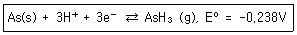
- -0.592
- -0.415
- -0.356
- -0.120
(정답률: 40%)
3과목: 기기분석I
41. 유기분자 CH3COOCH2≡CH의 적외선 흡수스펙트럼을 얻은 후 관찰 결과에 대한 설명으로 틀린 것은?
- 3300~2900cm-1 영역의 흡수대→C≡C-H 구조의 존재를 나타낸다.
- 3000~2700cm-1 영역의 흡수대→-CH3, -CH2- 구조의 존재를 암시한다.
- 2400~2100cm-1 영역의 흡수대→-C-O- 구조의 존재를 암시한다.
- 1900~1650cm-1 영역의 흡수대→C=O 구조의 존재를 나타낸다.
(정답률: 50%)
42. 분석기기에서 발생하는 잡음 중 열적잡은(thermal noise)에 대한 설명으로 틀린 것은?
- 저항이 커지면 증가한다.
- 주파수를 낮추면 감소한다.
- 온도가 올라가면 증가한다.
- 백색 잡음(white noise)이라고도 한다.
(정답률: 75%)
43. 1.50cm의 셀에 들어있는 3.75mg/100mL A(분자량:220g/mol) 용액은 480nm에서 39.6%의 투광도를 나타내었다. A의 몰흡광계수는?
- 1.57×102
- 1.57×103
- 1.57×104
- 1.57×105
(정답률: 55%)
44. 자외선-가시광선 흡수분광법에서 흡수봉우리의 세기와 위치에 영향을 주는 요소로 가장 거리가 먼 것은?
- 용매 효과(solvent effect)
- 입체 효과(sterc effect)
- 도플러 효과(Doppler effect)
- 콘주게이션 효과(conjugation effect)
(정답률: 71%)
45. 홑빛살 분광광도계와 비교할 때 겹빛살 분광광도계의 가장 중요한 장점은?
- 최대 슬릿 폭을 사용할 수 있다.
- 더 좁은 슬릿 폭을 사용할 수 있다.
- 아주 빠른 응답시간을 사용할 수 있다.
- 광원세기의 느린 변화와 편류를 상쇄해준다.
(정답률: 45%)
46. 원자 방출분광법(AES)의 플라즈마 광원 중 가장 중요하고 널리 사용되는 광원은?
- 직류플라즈마
- 아크 플라즈마
- 유도결합 플라즈마
- 마이크로파 유도 플라즈마
(정답률: 72%)
47. 원자흡수분광법에서 바탕보정을 위해 사용하는 방법이 아닌 것은?
- Zeeman 효과 사용 바탕보정법
- 광원 자체반전(self-reversal) 사용 바탕보정법
- 연속광원(D2 lamp) 사용 바탕보정법
- 선형회귀(linear regression) 사용 바탕보정법
(정답률: 70%)
48. 레이저 발생 메커니즘에 대한 설명 중 옳은 것은?
- 레이저를 발생하게 하는 데 필요한 펌핑은 레이저활성 화학종이 전기방전, 센 복사선의 쪼임 등과 같은 방법에 의해 전자의 에너지 준위를 바닥상태로 전이시키는 과정이다.
- 레이저를 발생의 바탕이 되는 유도방출은 들뜬 레이저 매질의 입자가 자발 방출하는 광자와 정확하게 똑같은 에너지를 갖는 광자에 의하여 충격을 받는 경우이다.
- 레이저에서 빛살증폭이 일어나기 위해서는 유도방출로 생긴 광자수가 흡수로 잃은 광자수보다 적어야 한다.
- 3단계 또는 4단계 준위 레이저 발생계는 레이저가 발생하는 데 필요한 분포상태반전(population inversion)을 달성하기 어렵기 때문에 빛살증폭이 일어나기 어렵다.
(정답률: 61%)
49. 미지의 나노크기의 작은 고체 입자시료의 표면에 코팅되어 있는 물질을 확인하고자 FT-IR을 이용하려고 한다. 이 때 실험을 올바로 진행하여 좋은 분석 결과를 얻기 위한 시료의 측정 및 준비에 관한 다음 설명 중 틀린 것은?
- Attenuated Reflectance Call을 이용하여 측정할 수 있다.
- 분말 입자를 Nujol이나 KBr에 묻혀서 측정한다.
- Diffused Reflectance IR을 사용할 수 있다.
- 표면에 붙은 시료를 적당한 용매로 추출하여 액체 셀에 넣어 측정한다.
(정답률: 65%)
50. X-선 형광분광법에서 나타나는 매트릭스(matrix) 효과가 아닌 것은?
- 증강효과
- 흡수효과
- 반전효과
- 산란효과
(정답률: 56%)
51. 광자변환기(photon transducer)의 종류가 아닌 것은?
- 광전압 전지
- 광전증배관
- 규소다이오드 검출기
- 블로미터(bolometer)
(정답률: 60%)
52. 다음 분자 중 적외선 흡수분광법으로 정량분석이 불가능한 것은?
- CO2
- NH3
- O2
- NO2
(정답률: 78%)
53. 유도결합플라스마 분광법이 원자흡수분광법보다 동시 다 원소(simultaneous multi-elements) 분석에 더 잘 적용되는 주된 이유는?
- 플라스마의 온도가 불꽃이 온도보다 높기 때문이다.
- 방출분광법이어서 광원(램프)을 사용하지 않기 때문이다.
- 불활성기체인 아르곤을 사용하기 때문이다.
- 스펙트럼선 간의 방해 영향이 적기 때문이다.
(정답률: 43%)
54. Nuclear Magnetic Resonance(NMR)애서 주로 사용되는 빛의 종류는?
- UV
- VIS
- microwave
- radio frequency
(정답률: 79%)
55. 500nm의 가시복사선의 광자 에너지는 약 몇 J인가? (단, Plank 상수는 6.63×10-34Jㆍs. 빛의 속도는 3.00×108m/s이다.)
- 1.00×10-19
- 1.00×10-10
- 4.00×10-19
- 4.00×10-10
(정답률: 71%)
56. 가시선이나 자외선 영역에서 주로 사용되는 시료용기의 재질은?
- quartz(석영)
- NacI(염화나트륨)
- KBr(브로민화칼륨)
- Til(아이오딘화탈륨)
(정답률: 70%)
57. 불꽃 원자 흡수 분광법에서 N2O-C2H2 불꽃으로 몰리브덴을 분석하고자 할 때 칼슘염의 화학적 방해를 제거하기 위해 사용되는 해방제는?
- Al
- Sr
- La
- EDTA
(정답률: 54%)
58. 단색화 장치의 구성요소가 아닌 것은?
- 광원
- 회절발
- 슬릿
- 프리즘
(정답률: 51%)
59. 투광도 측정에서 나타나는 불확정도의 근원으로 가장 거리가 먼 것은?
- 전도도검출기 잡음
- 제한된 눈금의 분해능
- 암전류와 증폭기 잡음
- 열검출기의 Johnson 잡음
(정답률: 42%)
60. 1,000mg Hg/L의 표준용액 100mL를 염화수은(HgCl2)으로부터 조제할 때 소요되는 HgCl2의 양(mg)은? (단, 수은의 원자량은 200.6이고, HgCl2의 화학식량은 271.6이다.)
- 73.9
- 135.4
- 200.6
- 271.6
(정답률: 61%)
4과목: 기기분석II
61. 0.1M Cu2+가 Cu(s)로 99.99% 환원되었을 때 필요한 환원 전극 전위는 몇 V인가? (단, Cu2++2e-⇄Cu(s), E0=0.339V)
- 0.043
- 0.19
- 0.25
- 0.28
(정답률: 40%)
62. 다음 보기의 특징을 가지는 이온화 방법은?
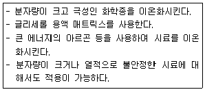
- 전기분무 이온화
- 전자충격 이온화
- 빠른 원자충격 이온화
- 매트릭스지원 레이저 탈착/이온화
(정답률: 49%)
63. 기체-액체 크로마토그래피(GLC)는 기체 크로마토그래피의 가장 흔한 형태로 이동상으로 기체를, 고정상으로 액체를 사용하는 경우를 일컫는다. 이 때 이동상과 고정상 사이에서 분석물의 어떤 상호 작용이 분리에 기여하는가?
- 분배(Partition
- 흡착(Adsorption)
- 흡수(Absorption)
- 이온교환(lon Exchange)
(정답률: 69%)
64. 크로마토그래피의 분리능에 영향을 미치는 인자로서 가장 거리가 먼 것은?
- 머무름 인자
- 정지상의 속도
- 충진물입자의 지름
- 정지상 표면에 입힌 액체막 두께
(정답률: 57%)
65. 액체 크로마토그래피에서 사용되는 검출기 중 특별하게 감도가 좋고, 단백질을 가수분해하여 생긴 아미노산을 검출하는 데 널리 사용되는 검출기는?
- 형광 검출기
- 굴절률 검출기
- 적외선 검출기
- UV/VIS 흡수 검출기
(정답률: 49%)
66. 전압전류법에 이용되는 들뜸 전위신호가 아닌 것은?
- 선형주사
- 시차펄스
- 네모파
- 원형주사
(정답률: 64%)
67. 기체 크로마토그래피(GC)에서 정성적인 목적을 위해 머무름 지수(retention index)를 사용한다. 다음에 주어진 머무름 데이터를 이용하여 미지시료의 머무름 지수를 계산한 것은?
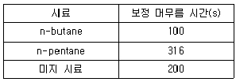
- 430
- 460
- 530
- 560
(정답률: 43%)
68. 전기분석법에서 전류흐름을 위한 전지에서의 질량이동 과정에 해당하지 않는 것은?
- 접촉(junction)
- 대류(convection)
- 확산(diffusion)
- 이동(migration)
(정답률: 66%)
69. 자기장 부채꼴 분석기의 슬릿에서 나오는 질량 m, 전하 z인 이온의 병진 또는 운동에너지 KE를 바르게 나타낸 것은? (단, v는 가속된 이온의 속도이다.)
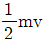
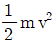
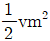
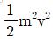
(정답률: 78%)
70. 폴라로그램으로부터 얻을 수 있는 정보에 대한 설명으로 틀린 것은?
- 확산전류는 분석물질의 농도와 비례한다.
- 반파전위는 금속의 리간드의 영향을 받지 않는다.
- 확산전류는 한계전류와 잔류전류의 차이를 말한다.
- 반파전위는 금속이온과 착화제의 종류에 따라 다르다.
(정답률: 70%)
71. 시차주사 열량(DSC)법으로 얻을 수 없는 정보는?
- 순도
- 결정화 정도
- 유리전이온도
- 열팽창과 수축 정도
(정답률: 56%)
72. 전압-전류법의 특징에 대한 설명으로 틀린 것은?
- 전압-전류법(voltammetry)은 전압을 변화시키면서 전류를 측정하는 방법이다.
- 순환 전압-전류법을 이용하여 화합물의 산화-환원 거동을 연구할 수 있다.
- 삼각파형의 전압을 작업 전극에 걸어 주어 전류를 전압의 함수로 측정한다.
- 전압-전류법은 일정 전위에서의 전류량을 측정한다.
(정답률: 48%)
73. 열 무게 분석법 기기장치에서 필요하지 않은 것은?
- 분석저울
- 전기로
- 기체 주입장치
- 회절발
(정답률: 66%)
74. 다음 그림은 매칠브로마이드(CH3Br)의 질량스펙트럼이다. (최고분해능 m/z=1) M 피크는 C12H3Br79 화학종에 해당한다. 다음 설명 중 옳은 것은?
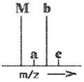
- 피크 a는 큰 피크 M의 위성피크로서, M 피크의 간섭 잡음 때문에 생긴 것이다.
- 피크가 4개인 것은 브로민의 동위원소가 4개이기 때문이다.
- 피크 c는 M+3피크라 불린다. 동위원소 중 가장 큰 것들의 기여로 나타난다.
- M과 b의 크기가 같은 것은 탄소화 브로민 중 동위원소인 C13과 Br81 함량이 각각 1/2씩 되기 때문이다.
(정답률: 62%)
75. 시료물질과 기준물질을 조절된 온도 프로그램으로 가열하면서 이 두 물질에 흘러 들어간 열량(열흐름)의 차이를 시료온도의 함수로 측정하는 열분석법은?
- 습식 회화법
- 열 무게 측정(TG)법
- 시차 열법분석(DTA)법
- 시차주사 열량(DSC)법
(정답률: 67%)
76. 액체 크로마토그래피에서 머물지 않는 물질이 빠져 나오는 시간이 120s, 물질 A의 머무름 시간(retention time)이 180s, 물질 B의 머무름 시간이 270s 일 때, 크로마토그래피 관에서 물질 A에 대한 물질 B의 선택인자(selectivity factor) α의 값은 얼마인가?
- 0.4
- 0.75
- 2.5
- 3.0
(정답률: 60%)
77. 다음 중 전위차법에서 주로 사용되는 지시전극은?
- 은-염화은 전극
- 칼로멜 전극
- 표준수소 전극
- 유리 전극
(정답률: 65%)
78. 비행시간 질량분석계에 대한 설명으로 틀린 것은?
- 기기장치가 비교적 간단한 편이다.
- 가장 널리 사용되는 질량분석계이다.
- 검출할 수 있는 질량범위가 거의 무제한이다.
- 가벼운 이온이 무거운 이온보다 먼저 검출기에 도달한다.
(정답률: 55%)
79. 이온선택성 전극의 장점에 대한 설명 중 틀린 것은?
- 파괴성
- 짧은 감응시간
- 직선적 감응의 넓은 범위
- 색깔이나 혼탁도에 영향을 비교적 받지 않음
(정답률: 78%)
80. 크로마토그래피에서 봉우리의 띠넓힘을 줄이는 방법으로 가장 적합한 것은?
- 지름이 큰 충진관을 사용한다.
- 이동상인 액체의 온도를 높인다.
- 액체 정지상의 막두께를 줄인다.
- 고체 충진제의 입자 크기를 크게 한다.
(정답률: 61%)